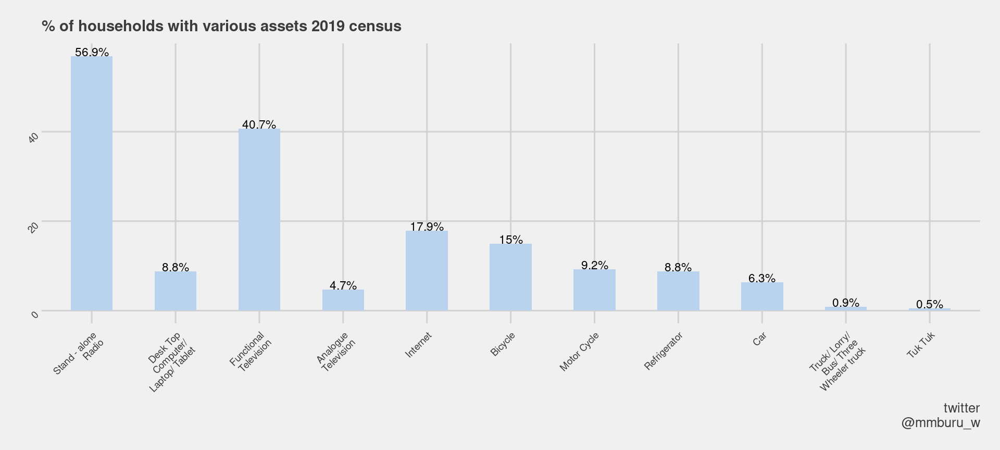
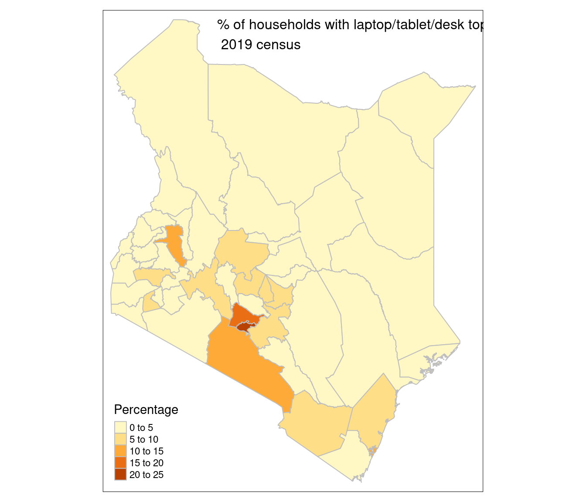
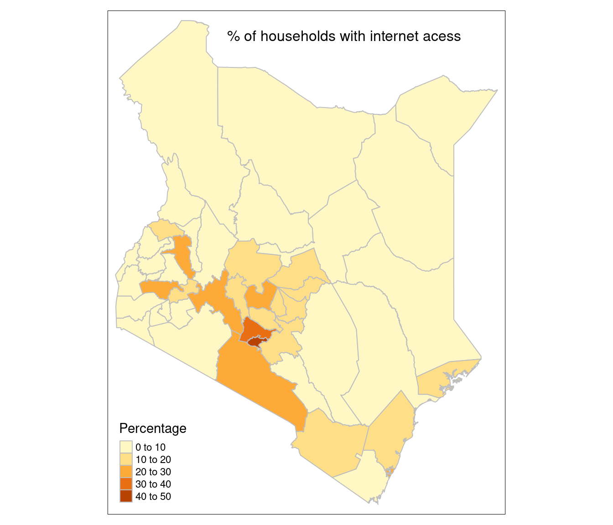

#Packages used
library(plotly)
library(tidyverse)
library(data.table)
library(sf)
library(DT)
library(tmap)
library(ggthemes)
library(ggiraph)Kenya Household Assets
Kenya selected households assets 2019 census
I figured that it will be important for me to do this to show why it is impossible for online learning to be adopted in Kenya.
I used 2019 census data set which can be found here and the counties shape file can be found here
Read data set
household_assets <- fread("percentage-distribution-of-conventional-households-by-ownership-of-selected-household-assets-201.csv")
#
kenya_shapefile <- st_read("County") %>% setDT()Reading layer `County' from data source
`/home/mburu/personal_projects/github_blog/myblog/kenya_population/County'
using driver `ESRI Shapefile'
Simple feature collection with 47 features and 8 fields
Geometry type: MULTIPOLYGON
Dimension: XY
Bounding box: xmin: 33.91182 ymin: -4.702271 xmax: 41.90626 ymax: 5.430648
Geodetic CRS: WGS 84kenya_shapefile[, county := tolower(COUNTY)]
# rename column
setnames(household_assets,
c("County / Sub-County", "Conventional Households" ),
c("county", "households"))Some minor cleaning
# remove commas
household_assets[, households := as.numeric(gsub(",|AR K ", "", households))]
household_assets[, county := tolower(county)]
sub_county <- household_assets %>%
group_by(county) %>%
filter(households == max(households)) %>% setDT()
sub_county_melt <- melt(sub_county,
id.vars = c("county", "households"))% of households with various assets 2019 census
- This is overall data set for the whole country computer devices is ownership about 8.8% this just means that about 91% of the students can’t access online learning. This is is just a naive estimation the number could be higher.
kenya_dat <- sub_county_melt[county == "kenya"]
p <- ggplot(kenya_dat, aes(variable, value, tooltip = paste(variable, " : ", value))) +
geom_bar_interactive(stat = "identity", width = 0.5, fill ="slategray2" ) +
geom_text_interactive(aes(variable, value, label = paste0(value, "%")),
position = position_dodge(width = 0.5),
vjust = 0.001, size = 3)+
labs(x = "Household assets", y = "%",
title = "% of households with various assets 2019 census",
caption = "twitter\n@mmburu_w")+
theme_fivethirtyeight()+
theme(
axis.text = element_text(size = 7, angle = 45, vjust = 1, hjust =1),
plot.title = element_text_interactive(size =11)
)
p1 <- girafe(ggobj = p, width_svg = 7, height_svg = 4.5,
options = list(
opts_sizing(rescale = T) )
)
p1p
Merge shapefile with asset data sets
sub_county_melt[county == "elgeyo/marakwet", county := "keiyo-marakwet"]
sub_county_melt[county == "tharaka-nithi", county := "tharaka"]
sub_county_melt[county == "taita/taveta", county := "taita taveta"]
sub_county_melt[county == "nairobi city", county := "nairobi"]
county_shapes <- merge(kenya_shapefile, sub_county_melt, by = "county")
setnames(county_shapes, "value", "Percentage")Computer devices data
computer <- county_shapes[variable %in% c("Desk Top\nComputer/\nLaptop/ Tablet")]
# this converts to sf object
computer <- st_set_geometry(computer, "geometry")Percentage of households with computer devices per county
- That is if a household owns a tablet, laptop or a desktop
#ttm()
tm_shape(computer)+
tm_borders(col = "grey")+
tm_fill(col = "Percentage")+
tm_layout(title = "% of households with laptop/tablet/desk top \n 2019 census",
title.size = 1, title.position = c(0.3, 0.95))
#ttm()% of households that can access internet
- This looks like is internet access through mobile phones
internet <- county_shapes[variable == "Internet"]
internet <- st_set_geometry(internet, "geometry")
#ttm()
tm_shape(internet)+
tm_borders(col = "grey")+
tm_fill(col = "Percentage")+
tm_layout(title = "% of households with internet acess",
title.size = 1, title.position = c(0.3, 0.95))